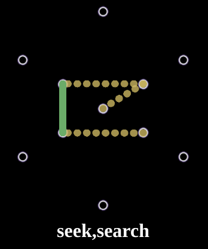

HOW TO PLAY
[日本語]
`Glyple` is a game with ingress glyph and wordle as motifs.
👀 Tap 🨠or ✏️' emoji to change the color mode
Rule
Guess the Glyph in six tries.
Each guess must be a exist glype. The following will be helpful.
https://fevgames.net/ingress/ingress-guide/actions/glyph-hack/
After each guess, the color of the line will change to show how close your guess was to the glyph.
Reload and you can play again.
Examples
 |
| 🨠|
|  |
| ✏️' |
Indicates that one of the vertical lines matches the correct glyph.
The other lines are those that do not exist in the correct glyph.
When play on PC (Mac, Windows...)
Please Make your browser narrow and portrait
[return to game]